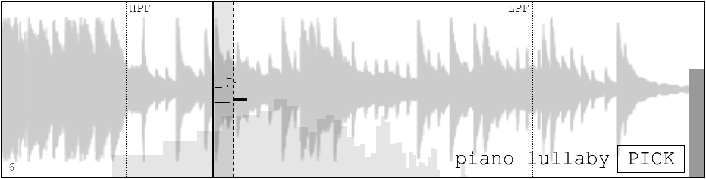
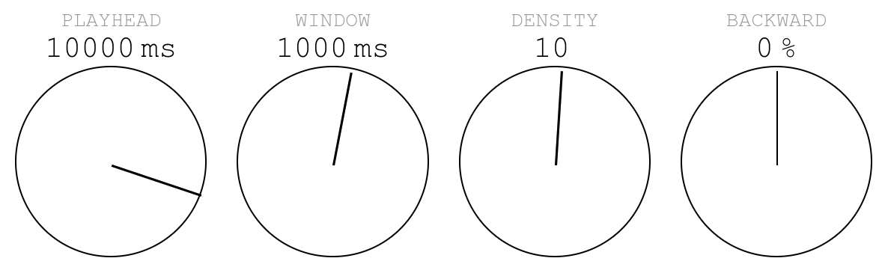
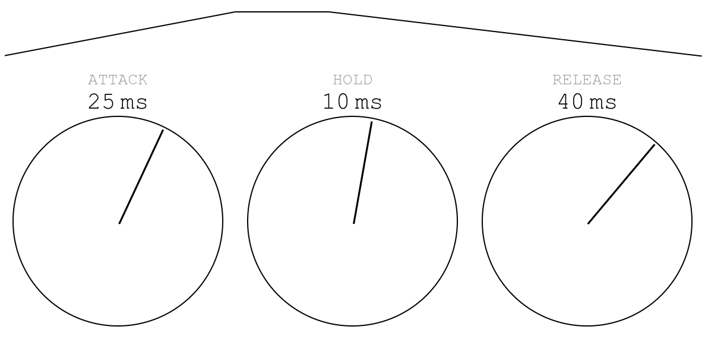
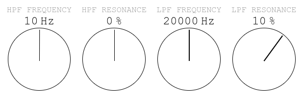
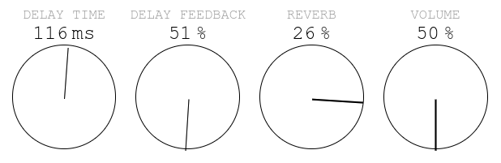
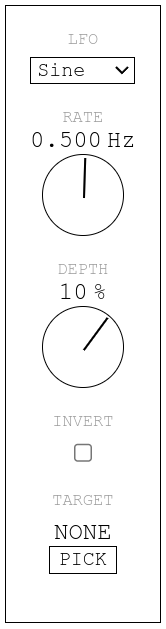

Bascule User Guide
- 1. The Audio Chain
- 2. The Waveform Display
- 3. The Knobs
- 4. Exporting Audio
- 5. Granular Synthesis
- 6. Ideas
- 7. Questions & Comments
- 8. Also See
1. The Audio Chain
Bascule is a dual granular synthesizer.
Each side of the bascule starts out with a sample before going through granulation, filters, and effects. At the very end, both sides are mixed together.
“A grain of sound is an acoustic event with a duration near the threshold of human auditory perception. This threshold is typically between 1 and 100 ms […]. These are the shortest durations in which differences in duration, frequency, spectrum, amplitude, amplitude envelope, and spatial position can be perceived.”The Computer Music Tutorial, chapter 13
The beginning of this guide will focus on the audio chain and the various controls available in Bascule. For more on granular synthesis, see the Granular Synthesis section.
Each side of the bascule goes through the following audio chain.
2. The Waveform Display
The top of each side shows the loaded sample and the state of certain controls.
- The shaded area is the window where grains will be played. A random start time for each grain is chosen within that window.
- The dashed line on the right side of the window can be moved around using the WINDOW knob.
- The solid vertical line on the left side of the window corresponds to the PLAYHEAD.
- Both filters are shown as dotted lines and can be modified here or using the FREQUENCY knobs in the filters section.
- The name of the sample is shown bottom right and can be swapped by clicking PICK.
- To the right is a rough meter. It will become red when clipping is occurring.
- The current grain count is always displayed bottom left.
- The thin black lines within the window show a rough visualization of the current grains. It will not visualize more than 5 grains.
3. The Knobs
The Granular Controls
- The PLAYHEAD knob moves the playhead left or right.
- The WINDOW knob increases or decreases the size of the window.
- The DENSITY knob increases or decreases the density of the grains. The unit is grains per second.
- The BACKWARD knob controls the percentage of the grains that will be reversed before being played.
The Envelope Controls
- The ATTACK knob controls how long each grain will take to reach full gain.
- The HOLD knob controls how long the grain will remain at full gain.
- The RELEASE knob controls how long the grain will take to come down from full gain.
- At the top of the knobs is a rough visualization of the envelope. The visualization is linear but the envelope is made somewhat smooth.
“A profound law of signal processing comes into play in setting the grain duration: the shorter the duration of an event, the greater its bandwidth.”The Computer Music Tutorial, chapter 13
The Filter Controls
These knobs control 2 filters: one high-pass (HPF) and one low-pass (LPF). The current location of the filters is also shown on the waveform display.
The Effects Controls
- The DELAY TIME knob controls the amount of time between echoes.
- The DELAY FEEDBACK knob controls how many echoes will occur.
- The REVERB knob controls how much of the audio chain will be sent to the reverb return track.
- The VOLUME knob controls the volume of the entire side.
LFOs
Bascule comes with 4 LFOs (low-frequency oscillators) that can be used to control any of the knobs.
- The dropdown at the top is used to select the shape of the LFO.
- The RATE knob controls the rate of the LFO (how many times per second it will go through its shape).
- The DEPTH knob controls how much the target knob will be affected by the LFO. The unit is a percentage of the full range of the target knob.
- The INVERT checkbox can be used to change the phase of the LFO shape by 180 degrees.
- The PICK button is used to select a target. Click PICK and then the knob that should become the target.
Using the Knobs
Simply press or downclick and drag up to increase the value or down to decrease the value.
Holding SHIFT while doing this will modify the value an order of magnitude faster.
When a knob is focused, the arrow keys can also be used to tweak the value.
Multiple knobs can be focused by pressing SHIFT and clicking other knobs. When multiple knobs are focused, they can be modified all at the same time.
4. Exporting Audio
At any time while Bascule is playing, you can click Export at the top right to download a webm rendering of the whole session. Subsequent downloads will start where the previous one left off.
5. Granular Synthesis
Granular synthesis happens when micro sounds are brought together to create a cloud of sounds. The micro sounds can be generated from oscillators or sampled. Bascule uses samples.
Each grain is basically a micro sample of the sample loaded into Bascule.
“Granular synthesis is really where the gap between synthesis and sampling is finally closed.”Creating Sounds from Scratch, p. 298
Bascule includes many of the controls that one needs to do granular synthesis. Other synthesizers might also include:
- Modification of the grain envelope shape.
- Modification of the playback rate.
- Detuning or pitch quantization of each grain.
- Playing grains via MIDI.
- A custom function to trigger the grains. (Bascule simply spreads the grain across the next second.)
Granular synthesis can also be used as an algorithm to time-stretch a sample. Or it can be used simply as part of an effects chain.
Rhythm Versus Pitch
The difference between rhythm and pitch is philosophical! This can be seen easily by:
- Keeping the envelope short (less than 50 ms total).
- Setting the window size to 0 ms.
- Setting the density to 1 grain per second.
- Increasing the density grain by grain.
At some point, around 20 grains per second, the beeping rhythm will transform into a pitch. This pitch can be tuned with higher density values.
Smooth Textures
Crackling textures and buzzing bees are a staple of granular synthesis but sometimes it’s nice to create a smooth texture. To do that, try the following:
- Increase the density to above 120.
- Increase the attack to above 100 ms and zero out the hold phase. This will smooth out most transients that would have occurred during the attack phase.
- Try playing grains backwards. This will convert transients into crescendos.
- Increase the window size to around 1000 ms, depending on the sample. Selecting grains around the same region of the sample but not from the exact same place will average out some harshness.
- Watch out for resonant frequencies and tame them with the 2 filters.
- Use a slow LFO and target the playhead. This can give the texture pleasing variations.
- Add delay and reverb! Of course.
6. Ideas
Bascule Back and Forth
Attach a very slow LFO to the MIX knob and design the textures on each side to gel well together. Having one side with more high-end energy and the other with more low-end energy can be effective (filters can help). The ever-changing mix will provide good variation. Both sides can even use the same sample.
Scrubbing
The sample can be played more or less as is by keeping the window and density small and moving the playhead slowly to the right. Using a saw LFO to snap back to the beginning can be effective.
2-bar Loop
Keeping the density very low (e.g. 2 or 3) and targeting the playhead with a square LFO can create a pleasing 2-bar loop. The base position of the playhead is crucial. Adding delay and reverb will help this loop feel melancholic or lo-fi.
4-bar Loop
The 2-bar loop can be extended into a 4-bar loop by attaching another square LFO to the depth of the first one.
Glitchy Percussions
Use grains for their percussive potential:
- Make the window size about as long as the sample itself.
- Keep the density low (e.g. 5 grains per second).
- Lower the attack to a few milliseconds.
- Zero out the hold phase.
- Increase the release to more than 100 ms.
Grains will be played from across the whole sample and will generate percussive events. Delay and reverb can make the glitchiness more coherent.
Quick Tips
- Removing some of the low end with the high-pass filter can remove a lot of resonant frequencies and make later mixing easier.
- Use the filters! They are helpful to make the two sides of Bascule cohere. And attaching an LFO to the frequency knob of a low-pass filter is an easy way to get variation. Resonance can make it more or less obvious.
- LFOs can target knobs on other LFOs.
- Using SHIFT to select multiple knobs and modifying them all at once is a good way to create clear transitions.
- Creative glitches can be created by (almost) zeroing out all the phases of the grain envelope.
- Modulate the delay or the reverb for extreme spatial effects.
- Use a smooth random LFO to vary the textures.
7. Questions & Comments
Questions and comments can be directed to mxtxcstudios@gmail.com.
Or reach out to @mxtxc_studios on Instagram.
I would love to hear what you make with Bascule.
8. Also See
- The Computer Music Tutorial book.
- The Creating Sounds from Scratch book.
- The MGranularMB plugin.
- Arturia's Pigments has a great granular engine.
- Sound Guru The Mangle's Manual.